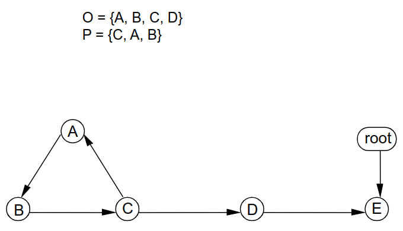

COMPSCI 711 - 并行与分布式计算笔记
课程结构
课程分为分布式算法与并行计算两个部分.
分布式算法
与中心化算法相比, 分布式算法的难点在于在分布式环境下通信可能被无限延迟, 节点可能随时崩溃且无法及时同步状态. 在分布式算法可以分为以下几个独立的部分
- 逻辑时钟: 我们发现传统的时间戳无法胜任事务的逻辑顺序排序问题. 于是我们提出了最简单的逻辑时间 (logical time). 但是逻辑时间无法解决系统间的逻辑顺序排序, 于是我们提出了基于因果逻辑关系实现的全序逻辑时钟 (total ordered logical clock). 部分逻辑时钟无法解决系统间无因果关系事务排序问题, 于是我们又提出了部分有序逻辑时钟 (partially ordered logical clock).
- 多播问题: 我们希望向系统中部分节点发送信息, 但是分布式并不能像中心化广播一样可靠. 根据希望保证消息到达的顺序, 我们将多播消息到达顺序分为了 FIFO 有序, 因果有序 (causal ordering), 总体有序 (total ordering) 并设计了对应的算法. 最后我们还考虑了如何设计可靠的多播以实现让所有预期节点都能最终收到消息
- 分布式互斥算法: 我们希望在分布式节点中实现对资源的独占访问. 考虑到分布式系统数据传输特性, 实现可靠的互斥访问比中心化的 mutex 实现困难一些, 我们提出了基于仲裁集 (Quorum-based) 与基于令牌 (token-base) 的互斥实现算法.
- 死锁检测: 在分布式系统中, 由于节点状态不可知, 死锁检测需要对系统做建图操作然后判断是否处于死锁. 我们使用类回声算法的方式实现
- 垃圾回收: 在分布式系统中, 我们不能采用基于引用的简单垃圾回收机制. 我们提出了加权计数的模式以解决分布式垃圾回收的节点崩溃与通信延迟问题
- 快照: 我们希望让所有的节点同时完成系统快照以规避快照状态不一致问题. 可是不同节点无法实现同时拍照. 我们使用 Chandy-Lamport 实现了所有节点在统一逻辑时间完成快照以实现所有节点在相同状态时拍照.
- 共识: 我们希望所有节点对同一变量的值达成一致, 但是不要求的具体值. 为了让节点最终可以达成一致且不陷入无限修正的状态, 我们使用了 Paxos 算法
- 一致性: 介绍了一种衡量系统性能的 CAP 理论.
- P2P系统: 介绍了在 P2P 系统中, 我们如何完成文件在系统中的管理与寻址.
并行计算
这部分从 CPU 实现的层次, 介绍了 CPU 的不同核心在并行计算时如何工作. 可以将课程分为如下部分
- 缓存与一致性问题: CPU 会从内存中缓存部分数据, 我们希望 CPU 可以尽可能缓存会反复利用的数据, 同一数据在不同 CPU 核心之间可以保持一致. 对于 CPU 缓存, 我们提出了直接映射缓存 (Directed-Mapped Caches), 全相连缓存 (Fully Associative Cache), 集合关联缓存 (Set-Associative Cache) 三种实现方式. 对于缓存一致性问题, 我们提出了写更新协议与写失效协议. 我们重点介绍了写失效协议中 MSI, MESI, MOSI, MOESI 四种实现按方式.
- 流水线: 我们希望同一 CPU 核心中的不同部件 (寄存器, LRU) 同时可以被高效利用起来. 因此我们提出了流水线式的指令执行方式. 但是流水线式的指令执行会出现竞态, 造成流水线的风险 (Hazard). 针对不同的风险, 我们提出了不同的解决方案.
- Superscalar 处理器: Superscalar 是一种简单的多核处理器. 在这里我们介绍了一种叫 MISP R10K 的 Superscalar 处理器, 但是这种处理器的多核并不完全独立 (仅有两核可以同时浮点计算, 另外两核可以整数运算). 我们将尝试手动模拟将汇编指令在四个核心上执行并尝试达到最大资源利用率
- 多处理器调度: 指令在理想的多核处理器上调度是一个 NP 问题. 我们尝试了部分贪心算法, 可惜并不能达到理论最优调度. 我们又提出了指令优先级的方案, 以期实现较优调度. 最后, 我们还模拟了循环展开以提升资源利用率
- 进程与线程: 介绍了进程与线程的区别. 针对竞态问题, 我们提出了互斥锁, 条件变量和信号量来解决问题.
W1L1 逻辑时间 (logical time)
分布式系统: 系统由多台机器组成
内容
- 多机器并行管理算法
- 多核心并行处理方法
分布式系统时间问题
- 为什么传统时间服务不可靠: 分布式系统需要时间服务, 但是机器之间很难实现时间戳的同步, 机器时间存在时区问题
- 时间不统一带来的问题: 时序操作出错
- 分布式系统的时间服务需求: 机器之间时间不一定完美同步, 服务之间的相对时序应该正确
逻辑时间: 用于标识分布式系统中事件之间逻辑顺序的时间戳 (计数器)
发生在之前:
- 在一个进程中如果事件 A 发生在 B 之前, 就记
A -> B, - 在分布式系统中
A -> B也可以根据逻辑推出 (发送请求 -> 接受请求) ->具有传递性- 在理想情况下, 如果
A ->B, 那么 A 的时间戳小于 B 的时间戳
- 在一个进程中如果事件 A 发生在 B 之前, 就记
逻辑时钟实现方法
对于本机事件, 计数器++. 对于外部事件, 重置计数器到本机与外部的最大值, 计数器++
loopforever if an event occurs in the process then assign the value of clock to the event; clock := clock + 1 endif if a message m is received then clock : = max(time(m), clock) + 1; // 注意 assign the value of clock to the receiving message event clock := clock + 1 endif endloop注意在接受消息的时候的 clock 确定, 例如
- P1 发送 M(2), P2 在接受前执行 B(0), 接收事件为 C(max(2,0+1)+1) = C(2)
- P1 发送 M(2), P2 在接受前执行 B(2), 接收事件为 C(max(2,2+1)+1) = C(4)
全序逻辑值 (Total Order Logic Value): 如果两个进程存在通信, 我们可以在通信的时候借助因果关系修正逻辑时间
- 进程 P1 执行事务 A(0)
- 进程 P2 执行事务 B(0)
- 进程 P1 发送事务 C(1)
- 进程 P2 接受事务 D(2) [完成时间戳修正]
但是如果两个进程的逻辑时间值相同且没有因果关系, 我们就无法得出先后关系. 例如
- 进程 P1 执行事务 A(0)
- 进程 P2 执行事务 B(0)
- 进程 P1 执行事务 C(1)
- 进程 P2 执行事务 D(1)
此时我们将无法确定 A, B 的先后顺序
为了解决这一问题引入全序逻辑值
(逻辑时间戳, 进程号码), 一般约定: 进程时间戳不同时以逻辑时间戳大小确定关系, 逻辑时间戳相同时候以进程号确定关系- 进程 P1 执行事务 A(0, 1)
- 进程 P2 执行事务 B(0, 2)
- 进程 P1 执行事务 C(1, 1)
- 进程 P2 执行事务 D(1, 2)
得出先后关系, A B C D
这虽然不能精确反应不相关进程的先后顺序, 但是仍然解决了排序问题
W1L2 部分有序逻辑时钟(Partially ordered logical clock)
全序时间戳并不能完美反应时序关系
对于进程 P1, P2: P1 在 (1, P1) 时与 P2 通信, 进行了时间戳纠正, 我们可以得到 A, B, E, F, G, H, J, K 的逻辑关系, 但是我们得不到 C, K 事件的逻辑关系, 但是因为 C, K 之间本身就没有通信, 我们也不会去研究 C, K 的因果关系.
部分有序逻辑时钟:
我们发现获取一个精确的逻辑时间戳是困难的, 且逻辑时间戳并不能完美表示时序, 因此我们只希望对有因果逻辑关系的事件赋时间戳, 因此引入了部分有序时间戳. 部分有序时间戳是一个集合, 集合中的元素是 (进程, 逻辑时间) 的组合, 表示该事件在此事件或此事件后发生
{(p,1), (q,2), (r,3)}就表示事件在这三个进程的对应时间时发生时候或者这三个进程的对应时间后发生- 最开始只有进程 p, 时间戳为 {}
- 执行事务 a, 加入时间戳
{(p,1)} - 创建子进程 r, q
- 进程 p 执行事务 e, 加入时间戳
(p,2), 继承时间戳(p,1), 因为(p,2)已经足够表示在(p,1)后, 因此不需要(p,1)得到{(p,2)} - 进程 r 执行事务 h, 加入时间戳
(r,1), 继承时间戳(p,1), 得到{(p,1), (r,1)} - r 创建子进程 s, t
- 进程 t 执行事务 k, 加入时间戳
(t,1), 继承时间戳{(p,1), (r,1)}, 得到{(p,1), (r,1), (t,1)} - 进程 s 执行事务 i, 加入时间戳
(s,1), 继承时间戳{(p,1), (r,1)}, 得到{(p,1), (r,1), (s,1)} - 进程 p 执行事务 f, 加入时间戳
(p,3), 继承时间戳(p,2), 因为(p,3)已经足够表示在(p,2)后, 因此不需要(p,2)得到{(p,3)} - 事务 f, i 进程双向通信, 双向添加时间戳
{(p,3)},{(p,1), (r,1), (s,1)},(p,3)可以表示在(p,1)后, 所以 f, i 合并为{(p,3), (r,1), (s,1)} - 进程 s, t 结束, r 执行事务 i, 加入时间戳
(t,2), 继承时间戳{(p,3), (r,1), (s,1)},{(p,1), (r,1), (t,1)}, 得到{(p,3), (r,1), (t,1), (s,1)} - 进程 q 执行事务 b, 加入时间戳
(q,1), 继承时间戳{(p,1)}, 得到{(p,1), (q,1)} - 进程 q 执行事务 c, 加入时间戳
(q,2), 继承时间戳{(p,1), (q,1)}, 得到{(p,1), (q,2)} - 进程 p 执行事务 g, 加入时间戳
(p,4), 继承时间戳{(p,3), (r,1), (s,1)}, 得到{(p,4), (r,1), (s,1)} - 事务 g 向 c 发送消息, c 继承 g 的时间戳
{(p,4), (r,1), (s,1)}得到{(p,4), (q,2), (r,1), (s,1)} - 进程 q 执行事务 d, 加入时间戳
(q,3), 继承时间戳{(p,4), (q,2), (r,1), (s,1)}, 得到{(p,4), (q,3), (r,1), (s,1)} - q, r 进程结束, 进程 p 执行事务 m, 加入
(p,5)继承{(p,4), (q,3), (r,1), (s,1)},{(p,3), (r,1), (t,1), (s,1)},{(p,4), (r,1), (s,1)}, 得到{(p,5), (q,3), (r,2), (s,1), (t,1)}
如何根据 g
{(p,4), (r,1), (s, 1)}, c{(p,4), (q,2), (r,1), (s,1)}判断 g, c 的因果关系 (虽然从图中我们可以看到 g -> c)?无法判断
部分有序逻辑时钟更加强大, 可以告诉我们事情发生的因果关系, 但是部分有序时钟的存储相当昂贵, 他需要维护一个集合, 集合的的元素数目上限是系统创建过的进程数目. 在实际开发的时候按需使用这三种时钟
W1L3 & W2L1 多播(Multicast)
多播: 向一组进程发送消息
多播消息排序属性: 确保应用可以按照一定顺序收到多播消息, 例如在共享文档中, 用户 A 将 120 行尾部加入了 111, 几毫秒后用户 B 删除了 120 行, 我们一定要保证协作用户 C 先收到 A 的操作, 后收到 B 的操作
多播实现方法:
引入中间件, 应用发起请求到中间件, 中间件确保多播请求符合排序属性后发送数据到目标机器. 目标机器收到消息, 确保排序属性符合后再将消息发给应用程序
消息排序属性
- FIFO有序: 对于同一个发送者, 接受者一定会按照发送者发送的顺序接受多播.
- 因果有序 (causal ordering): 消息在接受的时候应该具有因果性. (A 向 B, C 发起组队邀请, B 向 A, C 发送同意回复, 对于 C 来说, B 同意回复的消息必须在 A 的组队邀请到达之前收到. 即使 B 的同意消息先到达 C, 该消息也应该缓存到 C 的中间件中)
- 总体有序 (Total Ordering) : 对于任意两条消息, 所有接收这些消息的进程都以相同的顺序接收它们也就是说如果一个进程先接收 M1, 然后接收 M2, 那么系统中的所有其他进程也都必须先接收 M1, 再接收 M2 (假设用户 A 将变量设置为 1, B 设置为 2, 我们不管最后设置为几, 但是要保证所有机器上收到的设置顺序是一样的)
消息属性排序的实现
FIFO: 使用 TCP 协议实现, 对比设备逻辑时间戳与消息的差是否为 1 决定是否处理消息. 以 A 向 B, C 多播 M1, M2 为例
- A, B, C 设备同步时间戳 0
- A 发送消息 M1, 携带时间戳 1
- M1 到达 B, M1 的时间戳比 B 时间戳大 1, B 中间件接收并发送消息到应用, 更新时间戳为 1
- M2 到达 B, M2 的时间戳比 B 时间戳大 1, B 中间件接收并发送消息到应用, 更新时间戳为 2
- M2 到达 C, M2 的时间戳比 C 时间戳大 2, C 中间件接收消息并将消息缓存到缓存区, 不更新时间戳
- M1 到达 C, M1 的时间戳比 C 时间戳大 1, C 中间件接收并发送消息到应用, 更新时间戳为 1
- C 的缓存区中有 M2, M2 的时间戳比 C 时间戳大 1, C 中间件接收并发送消息到应用, 更新时间戳为 2
- 因为 FIFO 保证每一个发送端 FIFO, 因此逻辑时间戳就够用了
总体有序: 发送者发送消息, 接受者分配全序时钟并返回时钟. 发送者收集所有时钟, 取最大值广播回接受者, 接受者更新时钟. 对于发射者S1, S2 同时发送消息 M1, M2, 接受者 H1, H2 分别维护双队列 holding queue 与 delevery queue
- S1, S2 发送消息 M1, M2,
- H1以
M1(1, S1), M2(2, S2)收到消息, 存入 holding 队列, 标记 M1, M2 为未确认状态 - H2以
M2(1, S2), M1(2, S1)收到消息, 存入 holding 队列, 标记 M1, M2 为未确认状态 - H1 返回 M1(1, S1), H2 返回 M1(2, S1) 到 S1
- S1 收到并广播更新时间戳 M1(2, S1)
- H1, H2 收到广播, 确定 M1(2, S1)
- H1 更新队列为
M1(2, S1)\*, M2(2, S2), 确认 M1 时间戳, 加上 *. 根据优先级对队列进行重新排序, 队列保持不变 - H2 更新队列为
M2(1, S2), M1(2, S1)\*, 确认 M1 时间戳, 加入 *. 根据优先级对队列进行重新排序, 队列保持不变 - H1 队列队头元素 M1 已经被确认, 同时队列中没有优先级更小的元素(M2 虽然没有确认, 但是确认不可能让时间戳变小), 将 M1 加入交付队列, 队列变为
M2(2, S2) - S2 收到并广播更新时间戳 M2(2, S2)
- H1, H2 收到广播, 确定 M2(2, S2)
- H1 更新队列为
M2(2, S2)*, 确认 M2 时间戳, 加上 *. 根据优先级对队列进行重新排序, 队列保持不变 - H2 更新队列为
M2(2, S2)*, M1(2, S1)\*, 确认 M2 时间戳, 加入 *. (1, S1) < (1, S2), 队列更新为M1(2, S1)*, M2(2, S2)* - H1 队列队头元素 M2 已经被确认, 同时队列中没有优先级更小的元素, 将 M2 加入交付队列
- H2 队列队头元素 M1 已经被确认, 同时队列中没有优先级更小的元素, 将 M1 加入交付队列
- H2 队列队头元素 M2 已经被确认, 同时队列中没有优先级更小的元素, 将 M2 加入交付队列
这里有两个注意点
- Holding queue 是优先队列, 根据总体时间戳, 先排时间, 再排进程
- 在更新后我们只判断队头是否可以放入交付队列, 如果对头未确认就不放
- 比较队头的时候我们要确认队伍中已经确认的时间戳没有比他优先级更高的, 未经确认的时间戳不可能比他更高就可以 (因为未经确认的时间戳在确认的时候优先级只会降低不会增加)
因果有序: 每个节点维护一个时间戳向量
- A 向 BC 发起组队申请, B 回复 AC 同意, 要确保C 先收到组队, 后收到同意
- ABC初始化向量 (0,0,0), 表示 (A,B,C) 发出消息计数
- A 发送组队消息 M1(1,0,0) 给 BC
- B 收到消息, 回复消息 M2(1,1,0) 给 AC
- C 收到消息 M2(1,1,0), 比自己维护的 (0,0,0) 大2 说明有消息没有收到
- C 收到消息 M1(1,0,0), 比自己维护的 (0,0,0) 大1, 处理消息, 更新时间戳 (1,0,0)
- C 处理消息 M1 (1,1,0)
如果 A, C 分别几乎同时发出消息 (1,0,0) (0,0,1) 呢? 直接处理就可以了, 因为他们之间没有因果性, B 可以直接更新时间戳为 (1,0,1) 回复广播 M(1,1,1), AC需要分别收到对方发送的消息, 将时间戳更新为 (1,0,1) 才能接受 B 的消息
在接收消息时应该满足条件
节点 j 在接收 i 发出的消息时只需要保证: 第 i 位对应的时间戳应该是消息向量上 i 位时间戳上的计数 +1, 接收节点上非 i 位向量时间戳只要大于等于消息上的对应时间戳就好了 (比如节点1发送(3,1,1), 接收者维护的时间戳可以是 (2,3,4), 但不可以可以是(2,0,0), 我们关心的是第一位是2, 其他位大于1就可以)
W3L1 可信多播
可信多播: 所有的接受者都可以收到所有的消息
可靠性与顺序性是正交的 (Orthigonal) 你可以分别实现两者而不相互影响
难点: 进程是不稳定的, 可能会崩溃. 我们希望所有的进程都是无故障的 (nonfaulty)
简易实现: 发送者发送后, 每个接受者接受到消息后都会将消息发送给除了发送者之外的所有人 (消息量 \((n-1)\times(n-2)\))
虚拟同步 (virtual synchrony): 一种管理群组的模型, 用来实现在进程加入或离开多播组的情况下通信一致可靠
- 多播组视图: 维护一个时间点中多播组全部元素的集合
- 视图变化: 当有用户加入或者推出的时候视图发生变化
- 一致视图(same group view): 确保全部成员维护的视图是相同的
- 变化消息广播: 当视图变化时, 向所有成员广播
虚拟同步在做视图变化时会直接对视图做全量更新, 因此必须要在消息有序
实现虚拟同步:
假设:
- 消息采用 TCP 完成传输, 确保了 FIFO 有序, 保证两点之间连接后消息可以可靠传播, 不保证两点一定可以建立连接
- 发送者可能在传输消息期间或之前崩溃
- 在视图变更期间，不会发生进程崩溃
- 存在一个领导者来处理视图变更
实现:
定义
- 保留消息: 接收者对于每一个消息 M 都做 keep, 直到被告知所有进程都受到了消息
- 稳定 (stable) 消息: 如果消息 M 被所有进程接受 (ACK), 那么 M 变为稳定消息
- 删除消息: 只有稳定消息可以被删除
流程
触发视图变更: 由于新进程加入, 现有进程退出或故障等原因, 系统需要进行视图变更
广播视图变更消息: 系统中的领导者或协调者通知所有进程即将发生视图变更 (以willchange view群组成员为准)
处理不稳定消息: 每个进程收到消息后检查并处理它的所有不稳定消息, 发送未确认的消息副本给当前视图中的所有进程, 并等待它们的确认回执 (以willchange view群组成员为准, 不包含老视图中退出的成员)
发送清除消息: 一旦一个进程确认它的所有不稳定消息都已变为稳定 (即, 它接收到了所有其他进程的确认回执), 它会广播发送清除消息, 表明它已准备好迎接新视图
安装新视图: 当一个进程从所有其他进程接收到清除消息时, 它确认所有进程都已准备好过渡到新视图, 并开始在新视图下的操作
W3L2 互斥 (Mutual Exclusion)
互斥确保对共享资源的访问是序列化 (serialised). 即: 每个时刻只有一个任务可以访问资源
资源一般是"哑设备", 他们只能接受指令, 执行指令, 不能实现发送指令 (例如显示器, 老式打印机)
互斥算法要求
- Safety: 任何时间只有一台设备访问
- Liveness: 任务不能无休止的等待资源 (如死锁), 任务最终一定会授予资源
- Fairness: 任务有公平机会获取资源
基于时间戳的互斥算法 (Ricart): 对请求的逻辑时间戳进行排序, 然后按照顺序访问资源
- 进程在需要获取资源时会向全局广播获取资源请求
- 进程在收到资源请求后判断,
- 如果进程不需要该资源, 进程会响应 ok
- 如果进程需要该资源 (这个进程之前也全局过时间戳), 这个进程会比较收到了时间戳与自己时间戳的关系,
- 如果收到的小, 就返回 ok, 表示对方优先占有资源
- 如果自己的小, 就先不返回, 直到自己访问完资源以后再返回 ok
- 需要占用的进程在收到所有的 OK 后会开始占用资源
问题: 单点故障会导致全局等死. 无法确保传输
基于仲裁集 (Quorum-based) 的互斥算法
仲裁集
- 将系统中的节点划分成不同的仲裁集
- 一个节点可以属于多个仲裁集
- Overlap: 保证任意两个仲裁集的交集非空
Maekawa's 算法
将系统划分为投票集 (Voting set) 也就是仲裁集
一个节点需要独占时只需要向他所在的任何一个投票集中所有元素同意即可访问资源. (因为任何两个投票集都有overlap)
例如: 对于集合 {A B C}, {C D E}. A需要独占资源只需 B C 同意. 如果此时 E 需要独占资源, C 会投反对票
每个成员一次只能回复其投票集中的一个成员: 如果一个进程已经同意了另一个进程的请求, 它将不会对另一个请求作出回复, 直到它接收到一个释放 (release) 或放弃 (relinquish) 消息
如果收到一个时间戳更早的请求, 成员可能会尝试改变其投票: 这是通过向它最后投票的进程发送询问(inquire)消息来实现的。如果该进程可以释放其投票 (即它已经完成了对临界区的访问)，它将发送一个放弃消息给最初投给它的进程, 然后才能响应时间戳更早的请求
Maekawa's 算法解决死锁
2, 3 需要资源, 0 投票给了 2 (因为 (0,2)<(0,3)), 1 投票给了 3 (因为没有收到 (0,2)). 此时出现了死锁.
等 1 收到 (0,2) 的时候, 1 会意识到自己投错了. 1 会给 3 发送Request, 要求如果 3 还没开始占有, 就将选票归还. 如果 3 已经占有了就忽略这个请求. 1 收到投票后会重新投票
基于令牌 (token-base) 的互斥 (Raymond 算法)
持有令牌的人可以访问数据
我们假设通信路径并不是完全图, 我们希望令牌可以在节点之间传递, 因此我们使用最小生成树将图转换为了一颗旋转树
初始化生成树
初始化
- 将令牌随便分给一个节点 (G).
- G 持有节点后会开始一轮 bfs,
- G 会将 init 消息发给 C, C 记录 holder_C = G 意思是需要令牌就找 G
- BD 记录 holder_B = holder_D = C (注意不是 G)
- AF 记录 记录 holder_A = holder_F = B
- E 记录 记录 holder_E = A
假设 A 需要令牌
- A 将请求队列加入 A req_A = [A]
- A 请求 B, B 在请求队列中加入 A req_B = [A]
- B 请求 C, C 在请求队列中加入 B req_C = [B]
此时 D 也需要令牌
- D 请求 C, C 在请求队列中加入 D req_C = [B, D]
- C 请求 G, G 不需要资源, 将令牌给 C, holder_G = C
- C 处理队头元素 B, 将令牌交给 B, req_C = [D], 同时告诉 B 自己需要令牌 req_B = [A, C], holder_C = B
- B 处理队头元素 A, 将令牌交给 A, req_B = [C], 同时告诉 B 自己需要令牌 req_A = [A, B], holder_B = A
- A 处理队头元素就是他自己, 占用资源
- A 释放后从处理队头, 将令牌交给 B, holder_A = B
- B 释放后从处理队头, 将令牌交给 C, holder_B = C
- C 释放后从处理队头, 将令牌交给 D, holder_C = D
W3L3 回声算法 (Echo Algorithm)
回声算法是一种在分布式计算和拓扑网络中广泛使用的算法。它主要用于网络中信息的传播，特别是在确定网络结构，如节点的数量或网络的拓扑结构时非常有效。这种算法特别适用于没有中央控制的分布式系统，可以帮助在网络中传播信息并收集状态信息。
回声算法的工作原理基于简单的消息传递机制。当一个节点需要执行一个全局操作（例如，网络搜索、拓扑发现或全局状态收集）时，它会启动算法，通过向其邻居发送特定类型的消息来触发一系列的信息交换过程。
初始化：某个节点（称为发起节点）触发算法，向所有直接连接的邻居节点发送一条消息。
消息传播：当一个节点收到来自其邻居的消息时，它会检查是否是第一次收到这类消息：
- 如果是第一次，它会记住发送该消息的邻居（称为父节点），然后将消息转发给除父节点外的其他所有邻居。
- 如果不是第一次收到该消息（即已经转发过），它会忽略该消息。
回声返回：当一个节点向其所有邻居转发了消息，并从所有这些邻居中收到了回应（或者它没有其他邻居要转发消息），它就完成了它的部分工作。这时，它会向它的父节点发送一个回声消息，表明它和它的子树已经处理完毕。
收集信息并终止：回声消息可以携带从子树收集的信息（例如，子树的大小或其他任何有关的状态信息）。当发起节点从所有直接连接的邻居收到回声消息时，算法结束。这时，发起节点可以根据收到的回声消息计算全局属性（例如，网络的大小或特定的拓扑特征）。
- 1 发起, 请求 2 3
- 2 发起, 请求 4 5
- 3 发起, 请求 5 6
- 4 回应没有孩子, 只有 2-4
- 5 发起, 请求3, 3 不回应, 5 返回 2 - 5 - 3
- 5 不处理 3 的请求
- 6 回应没有孩子, 只有 3 -6
- 2 回应 1-2-4, 1-2-5-3
- 3 回应 1-3-5, 1-3-6
- 1 构建
- 1-2-4 1-2-5 1-3-5 1-3-6
W4L1 死锁检测 (Deadlock detection)
Wait-for 图: 一种有向图, 节点是进程, 有向边
(u, v)表示u因为等待v而阻塞.死锁模型
AND model (资源模型): 进程继续执行需要获取全部多个资源造成的死锁. 当图中有循环, 环就是死锁
OR model (通信模型): 进程继续执行需要获取多个资源中的任意一个, 造成的死锁 (例如: 进程因为等待其他进程的消息到达而阻塞造成的死锁), 当图中有循环, 不一定是死锁, 只要有消息可以过来解锁

例如 Z 可以解锁 Y
检测死锁
OR 模型
如果在 OR 中存在一系列节点, 节点都有出边, 出边都指向这一系列节点 <=> 存在死锁
将 节点都有出边, 出边都指向这一系列节点 的图称为 knot
注意, 存在有向环且有向环上节点不指向外部不是必要条件, 只要有出边, 不外指就可以了. 可以参考左图
左边存在两个 knot: ABC, BC. 但是注意, 左边图没有有向环
右边不存在因为 C -> D, D 没有出边
AND 模型: 有向环 <=> 死锁
死锁检测解决算法实现
探针模型: (探针发起者, 当前一次传递的发送者, 当前一次传递的接受者)
AND 模型:
检测方法: 当探针回到探针发起者时死锁成立
假设存在 P1 -> P2 -> P3 -> P1
P1 无法获取资源时会发出探针 (1,1,2)
P2 收到探针, 发现自己无法满足条件, 发出探针 (1,2,3)
P3 收到探针, 发现自己没法满足 P2 的条件, 发出探针 (1,3,1)
P1 收到自己发出的探针, 死锁成立
OR 模型
采用类似回声的算法, 当节点被阻塞时响应回声, 否则不相应, 如果图建全了(echo成功), 说明所有人都在阻塞, 处于死锁模式
W4L2 垃圾回收机制 (Garbage Collection)
中心化系统的垃圾回收常采用引用计数: 对象被复制, 引用+1, 对象删除, 引用-1. 引用为 0, 自动删除
我们无法在分布式系统中采用, 因为分布式系统的加减不定序, 例如 先 +1, 后 -1, 变成先 -1 成 0 直接回收
加权计数
对象拥有权重, 指针分配权重.
对象的权重是指针的权重和, 新增指针的时候权重会被均匀分配, 删除指针的时候权重会被减去, 为 0 时删除
在图中, 右侧指针被复制, 因此将 5 分给新指针一半
分布式可行性: 假设有 M1(10) -> M(10), 我准备复制 M1 给 M2, 此时 M1(5), M2(5), M(10), 然后我们准备删除 M1.因为 clone -> delete, 我们在 clone 的时候将权重折半相当于携带了有新指针这一信息, 因此即使 M2 没有发送加引用给 M 就删除 M1, M3 也只会减少 5, 不会完全删除
权重无法分割处理: 权重只会减少(删除时)不会增加(新增时不增加), 因此当权重不够分的时候我们可以引入一个中间对象
循环引用处理:
Predecessor & successor: A 指向 B, A 是 B 的前生 (Predecessor), B 是 A 的后继 (successor)
定义 O 是一组对象, P 是 O 的 Predecessor 集合, 如果 O 存在循环结构, P 是 O 的子集
注意: 这种情况 O 不构成循环结构, 因为 O 整体还被 D 引用, 除非 D 被删除了, 否则 O 不能删
根对象 (root object): 操作系统对象. 图中的 root
思想: 如果 O 中不包含根对象, 但是 P属于O, O 就是垃圾

基本实现: 当发现很多对象很久没有使用, 我们就可以发送探针, 从这些对象的任一元素开始, 如果当前元素没有后继, 它就会将探针返回给发起者, 发起者可以根据探针上记录的路径获取整个前驱后继关系, 从而实现垃圾回收
确保探针可以被完全回收: 当 C 将探针给 A 时, A 需要知道当前探针是否完全回收了, 否则 A 将直接删除 ABC, 可以采用加权引用的方法实现探针的分裂.
p.s. 如果一个节点已经发送过探针, 之后来的探针会被直接返回
B -> C 将探针发给 C, C 已经分出去了, 此时 D>-C的探针会直接还给A
如何判断当前建立的前驱后继关系是完整的?
在这张图中, 探针完全可以指向 E, 此时 A 只知道 D->E关系, 并不知道 root -> E 的关系, 也就不会将 root 放入 P, 此时 A 只知道 O = {ABCDE} P = {ABCD}, 从而回收 ABCDE. 即 A 发出的探针无法确保 O 中元素的前驱全部在 P 中. 因为 A 无法到达一个节点的全部前驱.
解决方法: 在统计节点 E 的前缀时, 前缀引用权重相加, 如果小于 E 的权重, 说明没有统计完全, E 不能加入 O 集合
W4L3 全局状态与快照 (Global state and snapshot)
每个进程都有进程的本地状态 (local state) 和信道 (communication channel) 状态
- 本地状态: 进程自己开辟的本地空间
- 信道状态: 进程间异步通信发出还没有收到的信息
全局状态就是全部进程的本地和信道状态
快照实现的难点: 没有全局的时钟系统, 无法包装所有机器上拍摄时间一样
全局状态的一致性(consistent)
需要满足条件
- C1（发送接收一致性）：进程P标记状态已经发送, 要么信道记录消息在信道中, 要么接受者记录已经收到了。这保证了消息传递的一致性，即系统不会出现接收者(进程或者信道)记录了一条消息，而发送者却没有记录发送该消息的情况。
- C2（未发送消息不应被记录为接收）：还未被发送者记录为发送的消息，不应该在接收者那里被记录为已接收。这避免了在分布式系统中可能出现的时间错乱问题，即防止了接收者似乎“预知”了一条还没发送的消息。
何时拍摄快照: 当进程 B 在处理进程 A 发来的消息 M 前, 若发现 A 的快照领先于自己, 且 M 是在 A 拍照后发送的, 就需要先拍照, 再处理消息 M. 简而言之就是 B 需要在与 A 同步快照后再处理 A 快照后产生的消息complement
FIFO 信道实现快照的 Chandy-Lamport 方法
- Pi 会在快照后向所有信道发送 Mark 标记, 表示自己完成了一次快照. 用来分割快照前后的消息
- Pj 在收到 Mark 消息后得知 Pi 完成了快照拍摄, 同时收到 Mark 意味着 Pj 已经处理完了所有 Pi 在快照之前产生的消息 (因为 FIFO 原则).
- 此时 Pj
- 如果 Pj 是第一次受到 Mark 会为每条进入信道创建缓冲区
- 将Mark之后的消息都压入缓冲区缓存起来(构成信道状态)
- 对自己拍照
- 将自己拍照的消息发送出去, 然后处理 Mark 之后信道状态中的消息
W5L1 共识问题 (consensus problem)
问题描述
- 系统中有 N 个节点, 每个节点可以被初始化为 0 / 1
- 网络之间采用可靠异步通信, 但是不保证传输信息需要的时间
- 节点处理信息的速度不同, 可能会处理失败并停止发送消息, 停机可以重启
- 保证最多一个节点失败
- 目标: 所有节点的值达成一致
共识容忍问题 (Fault-tolerant onsensus protocol): 允许部分节点出错.
处理简易流程: 从所有节点处收集投票, 当大多数节点投票后结束投票, 节点做出决定 (是否接受这个结果)
FLP 不可能性定理 (FLP Impossibility of Consensus): 在一个异步模型中, 即使可能只有一个节点崩溃, 也找不到一个可以达成共识的容错分布式算法
证明:
- 系统希望对某个命令达成共识
- 某个节点的信息传输可能存在网络延迟. 继而被其他节点视为崩溃
- 因此系统是容错的 (Fault-tolerant), 其他节点需要重新达成共识
- 在新共识达成之前, "崩溃"节点的消息到达
- 系统状态回到 a 步骤.
算法完全正确需要满足 (totally correct)
- 安全性 (safe): 非故障节点最终会达成一个一致的值
- 终止性 (terminates): 算法一定会在有限的时间内停止
FLP 不可能性定理证明了在完全异步的状况中我们无法实现完全正确性, 但是我们可以通过调整假设, 增强容错机制 (加入超时控制) 实现可用的共识容忍算法
Paxos 算法
- 角色:
- 提案者 (proposer): 启动算法, 希望就某个值达成一致
- 接受者 (acceptor): 选择性接受提案者发出的请求
- 学习者 (learner): 等待算法的结果, 最终接受结果
- 实现
- Phase 1: 准备请求 (prepare request)
- 提案者选择一个新的提案版本号
n, 发送准备请求 (prepare request)("prepare", n)给所有接受者, 询问:- 是否可以发起一个版本号为
n的提案 - 如果可以, 接受者觉得提案值为多少合理呢
- 是否可以发起一个版本号为
- 接受者收到请求
n后, 会对比当前的 n 与之前已经响应的请求的编号.- 如果当前请求
n比已经响应的所有请求都大: 响应(ack, n, n', v')分别代表响应n请求, 之前响应的请求的最大编号n',n'请求对应的提案值v'(注意v'是提案值, 不是请求值, 请求只有 n, 没有 v). 如果之前没有接受就返回(ack, n, -, -). 同时保证以后不会响应比n小的请求 - 如果当前请求
n不是已经响应的请求中最大的: 什么都不做
- 如果当前请求
- 当提案者收到过半响应后. 进入第二阶段
- 提案者选择一个新的提案版本号
- Phase 2: 提案
- 提案者收集所有响应, 找到其中最大的
n'对应的v'作为本次提案的v. 如果的接受者都没有返回v'就随便选一个值. 最后发送("accept", n, v) - 接受者接受
("accept", n, v), 如果n是接受者响应过的最大值, 接受者将接受这个提案 - 接受者接受提案后会返回一个 ACK 给提案者告诉对方自己接受了提案.
- 如果大多数人接受了提案, 共识达成进入第三阶段
- 提案者收集所有响应, 找到其中最大的
- Phase 3: 结束
- 提案者广播决定值给全部学习者
- Phase 1: 准备请求 (prepare request)
- QA
- 为什么要放弃编号更小的
('prepare', n): 避免提案冲突, 保持最新 - 为什么大多数接受者记录 v, 我们就要将 v 选为共识: 大多数接受者接受, 我们就认为这个值是稳定的, 即使有网络问题也不会轻易推翻
- 为什么要放弃编号更小的
- 角色:
安全性: 某个值一旦被决定, 之后所有的 proposals 都不会与之冲突. 因为当一个 n v 成为 decision, 说明这个 v 获得了大多数人记录. 下次发起提案的时候, 大多数节点就会返回
(ACK, n_1, n, v)此时提议者就会选出v作为提议值活跃性: 根据 FLP, Paxos 不能保证活跃性 / 终止性. 情况如下: 节点 P1 完成第一阶段 n1, 节点 P2 完成第一阶段 n2, P1 的交互将不会被响应. 此时 P1 发起 n3, 此时 P2 的交互不会被响应, 最后循环发起无法终止
W5L2 一致性 (Consistency) 与 CAP 理论
数据复制
- 好处
- 提高可靠性(reliability): 如果一个副本损坏, 可以使用副本.
- 提高系统性能(performance): 通过部署广泛的 Web 代理提升系统访问
- 难点: 保持数据一致性(consistency)
- 好处
一致性模型: 定义了读操作时数据的可能返回值集合 A consistency model defines the semantics of read operation of a data store
两种模型
- 强一致性模型 (Strong Consistency): 客户端无论从哪里接入服务器, 永远可以看到最新值
- 最终一致性模型 (Eventual Consistency): 客户端读操作返回的可能是过去某个时间点的值, 但是不同数据库中的对象会最终趋于一致
实现强一致性的 Quorum 算法.
为每个复制品设置一个令牌, 获取令牌代表获取该复制品(数据库)的读写权限. 每个复制品令牌的权重为 1.
定义两个权重阈值: ww, rw 表示允许写入数据与读取数据的最小权重 (例如用户必须获取 ww 个权重的令牌才能完成写操作) . 权重 ns 是所有复制品的权重和.
- 要求
ww > ns / 2: 只有一个用户可以同时写入数据 - 要求
(rw + ww) > ns: 读操作与写操作只能同时执行一个
通过占有令牌的方式实现了读写互斥 (exclusive), 写写互斥, 允许并发读
- 要求
实现最终一致性
依赖两个属性
- 全面传播 (total propagation): 更新可以传播到所有的站点。
- 一致的顺序 (consistent ordering): 更新按照一致的顺序由所有站点处理。
强一致性保证数据一致, 但是会降低读写速度, 最终一致性会让用户疑惑, 出现无法读取最新值的问题
CAP 定理:
- 一致性 (Consistency): 为了实现一致性必须保证通信顺畅.
- 可用性 (Availability): 即使部分网络节点失效, 系统仍然可用. 为了我保证可用性必须做数据复制
- 分区容忍性 (Partition Tolerance): 即使网络中的部分节点发生分区造成节点通信无法进行, 系统仍然可以提供服务并在分区结束后同步数据. 在分区期间, 为了实现分区我们需要允许对这两个数据中心进行读/写操作, 则可以表明两个数据中心中的数据将不再一致. 如果我们认为一致性很重要, 并在网络中断期间禁用写操作, 我们将失去“可用性”, 因为无法进行更新操作
CAP 定理在网络系统中, 三个指标最多同时成立两个
W5L3 BASE 原则, 互不一致 (mutual inconsistency)
BASE原则
CAP 定理说明三个条件无法同时满足, 因此有了 BASE (Basically Available, Soft State, Eventually Consistent) 设计原则, 希望实现
- 基本可用 (Basically Available): 当部分服务出现故障时仍然给予响应, 但是无法执行故障部分的操作
- 软状态 (Soft State): 对于部分操作, 允许系统消耗一些时间来稳定, 在这期间系统返回的数据可能是不准确的 (例如 A 发起转账, 扣款, 但是 B 需要一段时间才可以收到)
- 最终一致性 (Eventually Consistent): 系统在停止输入后最终会变为一致
BASE 可能导致并发更新冲突的问题, 可以采用部分有序的时间戳和事件日志解决
互不一致性 (mutual inconsistency): 当网络分区发生后, 不同区的数据各自操作, 当连接恢复后, 节点之间需要相互通信同步最新信息. 此时可能出对象不一致的情况
检测互不一致性 (基于向量时钟): 对于每一个对象, 维护向量, 向量中的每一位代表在不同节点中的修改个数, 例如 user 对象存储到 ABC 三个数据库中, 那么 user 对象初始向量为 <0,0,0>, 分别代表在 ABC 三个数据库中的更新次数为 0.
当节点 A 发生更新时, A 上 user 对象的向量变为 <1,0,0>, 此时将 A 上的对象同步给 B, C 使其全部变成 <1,0,0> 状态
当 AB 与 C 产生网络分区后, AB 相互沟通可以维护两个相同的向量, C 维护向量. 当连接恢复后AB会与C做向量对比并合并, 如何 AB 上维护的向量上每一项都大于等于或者小于等于 C 维护向量, 否则则认为 AB 与 C 在网络分区时发生了并发修改, 出现了互不一致性
限制: 当数据写操作与其他数据读操作有关时, 会失效
W6L1 缓存服务器, 动态缓存 (Cache)
网络中的(缓存)服务器
- 缓存服务器: 用户在发起请求时直接请求缓存服务器, 如果缓存服务器有就直接返回, 没有就请求原服务器获取资源, 然后交给缓存服务器缓存. 因为缓存服务器距离用户近, 延迟小, 服务压力小, 有助于提升用户体验
- 代理服务器: 分为正向代理 (forward proxy) 与反向代理 (reverse proxy) . 正向代理一般驻留在客户端, 代理用户访问文件. 反向代理一般驻留在服务器, 使用反向代理代理服务器完成用户请求从而减少服务器负载
- 协作缓存服务器: ISP 会为不同区域节点部署不同的前向代理缓存服务器, 如果本区域缓存服务器没有数据会向其他区域请求, 都没有才向源服务器请求
CDN 网络架构
缓存存在的问题
- 内容可能过时(stale), 一致性不强
- 对于被命中的资源可以提高访问速度, 对于没有命中的资源会降低访问速度
- 缓存受到原数据变化率的限制,
- 部分包含敏感信息的数据 / 实时数据不应该被缓存
动态数据页面: 页面必须由用户请求即时生成, 不能预先生成 (例如 google 请求的结果). 一般具有高波动性 (数据变换频繁) 与高变异性 (数据需要根据用户定制化)
动态数据页面缓存技术
- 页面级缓存 (page level caching): 缓存整个页面的输出. 并不是很有效.
- 片段级缓存 (Feagment-level caching): 将页面中的不同部分分别缓存, 使得不频繁变化的部分可以命中缓存. 同时我们还可以为不同片段设置不同的缓存时间, 该技术基于 Edge Side Includes (ESI) 实现
- 数据中心缓存 (data-center caching): 基于数据本身的缓存策略. 用户请求数据时先检查有没有缓存对应数据, 如果没有就从 db 中获取 (redis)
- 基于值的 Web 缓存 (Value-based web caching): 很多响应其实是冗余的, 不同响应传输内容中只有少部分不同. 因此可以在源服务器回传数据时只回传变化的部分, 由缓存服务器组装文件并返回
W6L2 基于值的 Web 缓存 (Value-based web caching)
基于值的 Web 缓存目标: 减少 ISP 到用户之间的数据传输量 (因为用户到 ISP 连接的带宽受限)
消息摘要 (Message Digest): 用少量信息表述某一条信息. 一般采用散列函数或者摘要函数实现
- MD5: 生成 128 位长度的摘要值
- 基于值的缓存将一个页面分块, 计算每个块的散列值 (指纹) 用来识别块
工作模式: 在用户请求时, 源服务器会下发全部块给 ISP 的缓存服务器, 缓存服务器查找是否存在之前传输的块, 如果有则不传输这些块给用户, 仅传输这些块的指纹. 驻留在客户端的缓存服务器会将这些指纹替换为已经接收到的块
分块策略:
不能以固定大小分块, 否则在块中增删数据会导致后续全部块失效
Rabin 分块策略: 一种随机化的分块策略, 散列函数 f 将不长数据映射到 [0,2047], 构建一个窗口, 如果窗口中的散列值为 0, 则将这窗口作为分块点. 如果不为0 则向后移动这个窗口.
在这个例子中我们的窗口长度长3, 将 53 和 40 作为两个分块点. 虽然这个方法十分随机化, 但是我们可以将每个块分成大概 2K
当数据发生变化后, 我们会重新执行函数, 以分拆或合并块让所有块保持在 2K 左右
差异编码 (Delta encoding): 服务器会创建很多基文件, 这些文件是目标文件的多个常用版本, 用户在请求的时候会找到用户请求过的最接近的一个基文件, 然后返回目标文件与用户请求过的这个基文件的 diff
W6L3 P2P 系统
P2P 文件存储架构
中心化目录模型 (Centralized directory model)
构建一个中心节点用来存储所有节点持有的资源, 当节点需要资源时需要向中心节点请求拥有资源的节点, 然后向目标节点下载资源
优势: 高效, 带宽占用小, 节点存储需求低 (只需要存储文件)
劣势: 可扩展性有限, 存在中心节点故障问题
泛洪请求模型 (Flooded requests model)
向节点的邻居发送信息询问是否有资源, 如果没有就继续向邻居节点的邻居询问直到找到文件然后传输
优势: 没有单点故障问题, 只与邻居节点查询数据, 网络结构相对简单
劣势: 效率低, 会产生大量流量, 可扩展性有限
文档路由模型 (Document Routing model)
每个节点维护一个标识符, 维护一个包含邻居节点表示符的路由表. 节点在请求资源时, 如果自身没有就将请求转发到路由表中最接近请求的节点以提升查询效率
1 号节点需要文件 8, 在 1500和1200 的邻居中选择了最接近的 1200, 然后选择 200, 然后选择 10...
优势: 效率高, 节点存储要求低 (无需维护过多信息), 允许节点故障
劣势: 复杂
P2P 架构需要解决的问题
- 如何命名节点与对象
- 如何高效查找节点
- 如何在节点之间拆分数据
- 如何防范单点故障与数据丢失
内容可寻址网络 (Content-Addressable Network, CAN)
- 区域划分: 使用散列函数将节点和资源映射为 d 维笛卡尔坐标系中的点. 将空间分配给不同节点, 每个节点负责自己对应区域的资源节点. (注意: 空间中有两种点, 节点对应的点一般是自己所属区域的几何中心, 管理本区域的资源点)
- 邻居关系: 如果节点在 d-1 维度重叠, 那么两个节点就是邻居关系
- 文件查询: 当用户要查找文件时, 首先获取文件的坐标, 然后根据邻居关系转发请求给距离最近的邻居最后找到文件对应的节点
节点下线: 通知邻居节点接管资源, 将区域与资源交给邻居节点
节点崩溃: 节点定期向邻居节点发送坐标信息, 区域坐标, 节点邻居表. 当邻居发现节点断开后将连续崩溃节点的邻居重新划分管理区域
确保文件在节点崩溃后仍可寻: 使用完全不同的散列函数再次构造一个笛卡尔坐标系, 要求节点同时存储两个坐标系下的文件, 当 f 空间下的节点崩溃后, 根据 f' 空间中的信息, 找回丢失的文件并接管
W7L1 并行计算
- 管道系统: 将处理过程划分为不同阶段, 每个阶段处理一部分工作. 数据完成本阶段工作后会送入下一阶段, 新数据就可以进入当前阶段. 虽然单个阶段只能一次处理一份数据, 但是不同数据在同时间是并行处理的
- 并行系统: 在一个时间点可以同时同理一个阶段的多份数据
W7L2 直接映射缓存 (Directed-Mapped Caches)
全相连缓存 (Fully Associative Cache): 最朴素的缓存, 内容按顺序放, 但是查询需要 O(n)
直接映射缓存 (Direct-Mapped Caches)
为了减少缓存检索缓存的时间, 将 id 为 n 的元素缓存到 n % p 的 slot 中, p 是 slot 数量. 查询只需要 O(1)
继续提升效率: 使用 2 的整数幂作为 slot 长度以规避 MOD 运算. 在取 MOD 时只需要对需要的位数做 AND 111111 即可
W7L3 三种缓存模式
- 直接映射缓存劣势: 即使有少量元素, 仍然可能会造成抖动 (thrashing), 某些元素会占用统一空间造成频繁进出
- 集合关联缓存 (Set-Associative Cache): 为了缓解抖动问题. 将缓存分成了 2^n 个集合 (Set), 每个集合包含多个缓存行. 数据根据其地址的某些位映射到特定的集合, 但一旦映射到某个集合, 该数据可以存放在该集合的任何一个缓存行中
- 全相连缓存的内容轮替问题
- LRU (Least-recently-used): 全局计数器记录每个 Slot 的使用次数, 每次丢弃使用次数最少的元素
- 在缓存的时候我们不仅缓存目标, 还会根据空间临近性缓存目标附近的节点, 因此尽可能按照内存中的顺序去访问元素, 可以提高运行效率 (例如: 对于 arr[i][j] 以 i, j 顺序遍历会比 j, i 顺序遍历更优秀)
W8L1 多处理器缓存 (Multiprocessor Caches) 与缓存一致性 (Cache Coherency)
缓存一致性问题: 要保证缓存中的信息与主存中的信息一致. 如果 CPU 只做读操作则可以确保一致. 如果 CPU 做写操作, 有两种处理模式
- write through: 在数据写入缓存的时候同步写入主存
- write back: 数据只写入缓存, 当工作完成后再写入主存
对于频繁修改的数据一般采用 write back
缓存未命中 (cache misses) 类型
- 强制未命中 (compulsory miss): 对缓存行首次引用
- 容量未命中 (Capacity miss): 活跃缓存行太大, 无法缓存
- 冲突未命中 (Conflict miss): 目标已被缓存, 但是缓存行被其他内容替换
- 一致性未命中 (coherency missing): 缓存中的目标数据被标记为失效或者过时
- 真共享未命中 (True-sharing miss): 我需要的数据在其他处理器中被修改, 我的数据被标记为失效从而未命中
- 假共享未命中 (False-sharing miss): 我需要的数据的所在的缓存行中的其他数据被其他处理器修改导致整个一行数据被标记为失效从而未命中 (空间临近性导致缓存一般会缓存整块数据)
缓存一致性 (Cache coherency) 问题: 在多处理器结构的计算机中, 同一内存地址中的数据可能会在缓存中保存多个副本. 缓存一致性问题需要保证当数据被修改后在所有 cache 中均保持一致, 以便程序员将多个 CPU 缓存中的多个副本视为一个相同的整体操作
解决方案
- 采用 write through 策略
- 为所有 copy 同时执行写操作
- 在写操作一个 copy 时宣布其他 copy 失效
缓存一致性协议根据实现分类:
- 写时更新 (Write-update protocols)
- 写时失效 (Write-invalidate protocols)
缓存一致性协议根据全局状态可用性分类
- Snoopy 协议: 缓存被写入后通过总线向全局广播变更动作以便以便其他缓存失效 / 更新. (更新及时, 但是依赖广播, 占用大量带宽, 需要总线)
- 目录基协议 (Directory-based proticols): 维护一个中央目录, 中央目录监听处理器写入操作, 并决定通过网络通知哪些节点失效 / 更新缓存 (处理效率高, 占用资源少, 适用与大型多处理器结构)
W8L2 写失效协议 (Write-invalidate protocols)
模型
- 基础的写失效模型也叫 MSI 模型, 即(M: 修改, S: 共享, I: 失效)
- MOSI 模型在 MSI 模型的基础上加入了 O: Own
- MESI 模型在 MSI 模型的基础上加入了 E: Exclusive
- MOESI 模型是 MOSI 和 MESI 的组合
MSI 模型
S: 缓存从主存读取目标数据, 并标记自己为 Share 状态. 其他缓存也希望读取目标数据, 此时其他缓存会直接从拥有数据的缓存中获取 (因为更快) 并标记为 S
I: 某一个缓存修改了数据, 将除自己之外的缓存行标记为 I, 将自己标记为 M. 修改结束后将数据写回主存, 将自己标记为 S, 等待其他缓存调用数据. (这也意味着如果缓存处于 M 标记, 他是全局唯一的)
M: 如果其他处理器要读写一个处于 M 状态的缓存, M 缓存需要先写回. 如果请求读取则变更为 S 状态, 请求写则变更为 I
Read Hit: 如果处理器要读的缓存处于 M / S 就直接读缓存
Read Miss: 如果处理器要读的缓存处于 I, 就需要从主存或者其他缓存读取, 然后将缓存设为 S
Write Hit: 如果缓存处于 M, 直接写入, 如果处于 S 需要先发 I 再写入
Write Miss: 如果缓存处于 I, 需要先获取 S / M 的数据, 然后发 I, 再写入
合法状态
MOSI 模型:
增加 O 状态: 表示当前缓存是该数据项的拥有者
O 标记的缓存可以被修改且暂时不写入主存, 所有对数据的读均从该缓存读取
当缓存被轮替时数据需要写回主存
O 状态类似于一个拥有 Lazy 的 M 标记, 对所有请求完成代理. 因此可以减少内存的读写次数
S 状态表示数据被 Shared, 但是因为有 O 的存在, S 的数据可能比主存的新
M 状态表示脏数据, 同时全局独占. 与 O 相比没有 Lazy 属性, 但是加入了独占的特性
合法状态
MESI 模型: 增加 E 状态, 表示该数据在所有缓存中仅有这一份缓存, 此时修改数据无需广播 I
MOSI 与 MESI
MOSI
在频繁共享修改的场景中更为高效
这是因为 O 状态减少了频繁回写内存的需要 在此状态下, 拥有数据的缓存负责在数据块被替换时回写到内存, 从而减少了内存访问次数
拥有状态的职责：
在MOSI协议中, O 负责在缓存块被替换时将其写回到内存. 这样做可以延迟写回操作, 直到实际需要释放缓存空间时才进行, 从而优化了性能
MESI
高效
在缓存行不经常在多个缓存之间共享的场景中更为高效, 通过减少不必要的 I 操作来优化性能, 在MESI中, 如果一个缓存为 E, 那么它可以直接 M 而无需通知其他缓存。
数据清洁要求：
MESI协议要求共享的数据必须是干净的, 即与内存中的数据一致. 这确保了数据的正确性和一致性, 但在某些情况下可能会导致性能开销, 因为每次数据从 S -> M 时, 都需要先清理数据
MESI协议通过其 E 状态减少了无效化的需要, 这对于非共享数据的性能优化尤为重要. MOSI协议则侧重于减少对内存的写回操作, 特别是在多个缓存频繁读写同一数据块的环境中, 通过 O 状态延迟数据的写回
MOESI: MOSI 和 MESI 的结合
MSI 优化: 减少 Fasle Sharing, 减少数组的写入操作
进程 i 计算 a_n_i 的和记录到 t_i. 如何采用
t[i] += a[n][i]的模式会导致 t 在进程中被修改 8 * n 次, 每次相加, 都需要全局广播失效, 其他进程缓存的 t 就会失效造成 false sharing, 即使该进程要处理的 t[i] 并没有变更. 我们可以先计算结构, 然后赋值给 t 从而减少无效的广播
W9L1 写更新协议 (Write-update protocols) ??
总线中包含一个 Msh 信号, 如果另一个缓存包含了请求的位置则断言 (asserted) 这个信号. 缓存包含两个状态位: Shared, Dirty. 对共享位置写用 write-through, 对非共享位置采用 write-back. 状态转换如图
- Pread / Pwrite: 缓存所属处理器读取 / 写入
- Mread / Pwrite: 缓存不所属处理器读取 / 写入
- 有 (Msh) 表示操作是共享的 (比如 PWrite(Msh) 表示写入全部的缓存, PWrite(~Msh) 表示只修改当前缓存)
- 默认是 ~Share ~dirty, 本处理器读不转换, 本处理器写转为脏, 他处理器读写转为共享非脏
- ~Share, Dirty 在本处理器读写保持不变. 他处理器读转为 Shared Dirty
- Shared ~Dirty 在任何处理器读, 外部处理器写入, 本处理器共享写入, 外部处理器写入状态都不变. 本处理器独占写入转回 SD.
- SD 模式在所有读取中转台都不变. 在外部写入或独占写入都会变回 S~D
写更新协议的数据都是预填充的, 因此永远不会失效
W9L2 & W9L3 MISP 处理器设计
寄存器很像一个 D 触发器, writeenable 开启后允许保持数据
寄存器文件 (Register File)
在处理器中一个多寄存器的集合, 包含32 位及存取, 需要 5 位指定地址, 因为大多数操作是双操作数, 因此使用 busA/B RA/RB 实现双输入输出
W10L1 & W10L2 流水线
优势: 流水线工作无法减少单个任务处理时间 (latency) 但是可以提高系统整体吞吐量 (throughput)
劣势
- 速率受限于最慢的阶段: 流水线的执行速度被最慢的阶段限制, 这意味着整个流水线的速率不能快于其最慢的单个阶段
- 阶段长度不平衡降低效率: 如果流水线中的各个阶段处理速度不均匀, 那么较快的阶段将需要等待较慢的阶段, 这会降低流水线的总体效率
- 管道填充和排出: 启动流水线（填充）和完成所有任务后清空流水线（排出）需要额外的时间
加载指令 (Load Instruction)
- 指令提取Ifetch周期: 从指令内存中获取指令。
- 寄存器获取和指令解码Reg/Dec周期: 指令被解码, 同时从寄存器文件中提取必要的寄存器值以供后续操作使用
- 执行/地址计算Exec周期: 使用算术逻辑单元ALU计算需要访问的内存地址
- 内存访问Mem周期: 根据ALU计算出的地址从数据内存中读取所需的数据
- 写回WrLoad周期: 将从数据内存中读取的数据写回到寄存器文件中, 以供程序后续使用
不同处理器指令设计方式
- 单周期实现 (Single Cycle Implementation): 每个指令的所有阶段都必须在一个周期内完成, 为了保证在一周期内可完成, 周期长度被设计为了最长任务的耗时
- 多周期实现 (Multiple Cycle Implementation): 一个指令的不同阶段允许在多个周期中完成, 但是阶段一般是串行执行的, 一般不在指令的子阶段中插入其他指令的任务
- 流水线实现 (Pipeline Implementation): 允许同时执行多个指令的不同阶段
不同处理器指令设计效率差异
- 假设: 每条指令需要执行周期为CPI=3.8, 单周期实现每周期15ns, 多周期实现每周期10ns, 分别计算执行100条指令耗时
- 单周期: \(100\times45\)
- 多周期: \(100\times3.8\times10\)
- 流水线: \((100+4)\times10\) (这里 \(+4\) 是因为我们默认一般指令需要5周期完成)
流水线的风险 (Hazard)
结构化危害 (Structural hazard): 两条指令需要占用同一硬件资源
数据危害 (Data hazard): 在流水线中两个指令在同一周期需要访问数据时. 具体分为
读后写 (RAW): 后一条指令需要读前一条指令写后的结果, 但是后一条指令的读出现在了前一条执行写之前 (例如指令1在第5cycle才写, 但是指令而在第一cycle就读, 在time=cycle2时, 指令2在指令1写之前就读了)
写后读 (WAR): 前一条指令需要在后一条指令读取先写入 (就是 RAW 在对方处理器中的视角)
写后写 (WAW): 两个指令同时需要写入, 需要保证写入顺序
数据危害可以在非竞态 (结构化危害) 时发生
控制危害 (Control hazard): 当处理器遇到一个分支指令时, 通常需要一些时间来确定分支的条件是否成立(即是否需要跳转). 在这个决定做出之前, 处理器可能已经错误地预取了一些不应该执行的指令
解决流水线风险
结构化危害解决方法:
流水线停顿(stall the pipeline): 引入气球 (Bubble) 让指令晚若干拍执行
在这里指令4原本会在Cycle4时与指令1冲突, 我们引入一层气球要求指令4慢一个周期执行就可以规避指令 1, 4 冲突, 但是此时指令2, 4又冲突了. 我们一共需要4层气球才可以避免指令4的冲突
使用多端口(multi-port)内存: 允许同时读写的内存
分离数据内存和指令内存: 从而实现可以同时读取数据和指令, 减少冲突
数据危害解决方法
数据转发 (Data Forwarding): 允许 ALU 将计算结果直接转发到需要数据的pipline, 从而减少数据危害

在这里黄色先表示出现数据危害, 绿色线表示没有出现危害. 实际上数据在指令1的ALU部分就计算完成, 需要的数据已经产生, 但是因为数据还没有写入寄存器. 导致我们其他pipline无法使用, 我们可以直接在 ALU 计算出结果后直接将数据发送给需要数据会产生数据危害的 pipline
流水线停顿(Pipeline Stalling): 将转发与气泡方法结合起来以解决读操作在ALU计算之前的情况

指令重排(Instruction Scheduling): 可以将顺序无关, 无数据冲突的指令插入到气泡中以提高效率
控制危害解决方法:
流水线停顿(Pipeline Stalling): 遇到分支指令时，暂停流水线的执行，直到能够明确分支的走向（是否跳转及跳转地址）。这种方法可以确保执行流的正确性，但会导致流水线效率下降，因为在决策过程中流水线不能执行其他指令。
分支预测
R10K处理器采用分支预测以解决控制危害：
将零测试移至ID/RF阶段 (Move Zero test to ID/RF stage)
在指令译码(ID)/寄存器获取(RF)阶段进行零测试, 即尽早检查分支条件是否满足(如比较结果是否为零). 这样可以更早地确定分支的走向, 减少需要等待的时间
在ID/RF阶段添加加法器计算新的程序计数器(PC) (Adder to calculate new PC in ID/RF stage)
在指令译码/寄存器获取阶段加入一个加法器来计算新的程序计数器地址. 这意味着如果预测分支将要执行, 处理器可以立即计算出跳转后的地址, 进一步减少分支解析的延迟
W10L3 Superscalar 处理器
Superscalar 处理器是一种微处理器的体系结构, 它可以在一个时钟周期内并行执行 (issue) 多个指令(即开启多个pipeline).
指令分组: 为实现并发计算, Superscalar 需要将指令分组, 分组需要考虑降低 pipeline hazard. 有两种分组方式
- 静态多执行 (Static multiple issue): 在编译阶段将指令分成多个指令包 (issue packet). 指令包可以被视为一个非常长的指令 (VLIW: Very Long Instruction word. EPIC: explicitly parallel instruction computer)
- 动态多执行 (Dynamic mutiple issue): 硬件在运行时做出分组决策
延迟 (Latency): 执行指令需要的时钟周期数. 在流水线中, 由于处理器是流水线化的, 所以在前一条指令正在执行的同时, 下一条指令可以在下一个周期开始执行
重复率 (Repeat rate): 执行相同类型的另一条指令之前需要等待的周期数.
MIPS R10K 处理器: 该处理器是一种简单的 Superscalar 处理器, 有四个不完全独立的核心. 在每个时钟周期
- 最多有两个核心执行浮点数计算
- 最多有两个核心执行整数计算
- 最多执行一条内存存取操作 (load / store)
- 最多可以将一个整数核心用作分支判断
DAXPY 的 MISP R10K 处理器调度模拟
DAXPY 问题其实就是计算 \(ax+y\) 向量的结果, 实现代码为
for (i = 0; i < N; i++) { y[i] = a * x[i] + y[i]; }在做 CPU 调度前, 我们需要将其编译为汇编形式
addiu $s4, $s2, 1000 ; 令 $s4 = $s2 + 1000 (这里 $s2 是 x 的指针. $s4 是遍历终止地址) addiu $s6, $s3, 1000 ; 令 $s6 = $s3 + 1000 (这里 $s3 是 y 的指针. $s6 是遍历终止地址) Loop: lf $f2, 0($s2) ; 将临时变量 $f2 设为 $s2 的值, 也就是 $f2 = x_i lf $f3, 0($s3) ; 将临时变量 $f3 设为 $s3 的值, 也就是 $f3 = y_i madd $f3, $s1, $f2 ; 执行乘加操作: $f3 = $f3 + $s1 * $f2. 这里 $s1 是我们假设的 a. 即 y_i = a * x_i + y_i sf $f3, 0($s3) ; 将 $f3 存入 $s3 的位置, 即将临时的 y_i 存入 y 数组 addiu $s2, $s2, 4 ; $s2 指针后移 4, 移动到 x_i+1 addiu $s3, $s3, 4 ; $s3 指针后移 4, 移动到 y_i+1 bne $s2, $s4, Loop ; 如果 $s2 = $s4, 即到达最终条件, 退出循环MISP R10K 的指令表如下
Instruction Latency Repeat rate Integer add/sub/logical/branch 1 1 Integer load/store 2 1 Floating-point load/store 3 1 Floating-point add/sub/multiply 2 1 Floating-point multiply-add 3 1 Floating-point division 19 21 尝试完成一个循环内部的指令分配. 一共四个 Function Unit, 两个 Float Processer, 两个 Int Processer
- 时钟周期 1: 在一个浮点核心上执行 lf (load float) 获取
x_i到$f2 - 因为一个时钟周期只能执行一次内存读写, 因此该周期没有其他指令要执行
- 时钟周期 2: 在一个浮点核心上执行 lf (load float) 获取
y_i到$f3 - load float 有 3 个时钟周期的延迟. 因为下一条指令依赖
$f2,$f3, 所以 3, 4 周期没有操作 - 时钟周期 5: 一个浮点核心执行乘加操作, 延迟为 3
- 时钟周期 5: 另一个整数核心执行 x 指针移动操作, 延迟为 1
- 因为 y 在存储之前不能移动指针, 所以 y 指针移动不能在 store float 之前, 而 store float 需要在
$f3计算出来之后, 因此 store float 和 addiu 必须等 madd 结束. 因此时钟周期 6, 7 无操作, 需要等待 madd 的延迟 - 时钟周期 8: 一个浮点核心完成
$f3的存储, 一个整数核心完成 y 指针的移动, 一个整数核心完成循环结束条件判断
最后分配表如下:
Cycle FU #1 (FP) FU #2 (INT) FU #3 (INT) FU #1 (FP) 1 lf x1 2 lf y1 3 4 5 addiu(x1) madd x1, y1 6 7 8 sf y1 addiu(y1) bne - 时钟周期 1: 在一个浮点核心上执行 lf (load float) 获取
尝试循环展开. 展开循环并再次分配指令, 我们可以发现 CPU 利用率会提高
W11L1 & W11L2 多处理器调度
提升流水线效率的方法: Loop Unrolling
生成周期 (makespan): 处理完成多任务需要的时间
最小化生成周期是一个 NP Hard 问题, 我们可以通过贪婪算法得到生成周期最小值的近似值
贪心调度 (Greedy Scheduler)
- 思想: 只要有任务可执行就不要让CPU空闲 (将所有任务存储到列表中, 一旦有CPU空闲就取走列表中第一个)
- 调度时可以采用最短, 最长任务优先的方式, 但是都无法保证最小 makespan (考试也没法考吧)
- 我们算不出最小值, 只能知道最小值的下限是 运行时间和/处理器数
- 调度时还可能遇到任务之间的以来关系, 这让最小化 makespan 更难.
减少 makespan 的方法
- 增加核心个数: 可能都帮助, 但是如果遇到严格依赖关系的任务, 增加核心可能完全没有帮助, 甚至由于命中贪心调度的缺陷导致提高 makespan
- 减少每个任务的运行时间 😂
- 简化依赖关系 (去除一些依赖)
优先级调度
长任务优先
被依赖越多的节点越优先
涉及到大量CPU通信时可以将任务复制到目标处理器上. 例如: 有处理器1-3, 任务 1, 2. 任务1为读取数据 , 任务2为处理数据. 我们希望 CPU1 执行任务1, CPU2,3 执行任务2. 但是将数据从 CPU1 发送到 CPU2 需要花费大量时间. 我们可以将任务1 复制到CPU2,3上. 让 CPU 2,3 直接读取数据, 处理数据
在这张图中, 将信息传输到另一个CPU需要1时钟周期. 如果在 P0 上运行T0, T1. 在 P1 上运行 T2. T1因为和T0共用CPU, 不需要时间传输数据. 但是我们需要一个时钟周期将数据从P0发送到P1, 一共需要3时钟周期才能执行完. 但是如果让P0, P1 同时运行 T0, 一共只需要2周期即可完成
使用循环展开 (unlooping) 以提升运行速度:
假设一个指令需要一个时钟周期, 我们使用 4 homogenous Superscalar 处理器

在上面这个例子中, Tb 指令依赖 Ta, 因此即使有四同构处理器, Ta, Tb 依然需要串行执行. 最后共需要 2N * 2 = 4N 个时钟周期完成
在这个图中, 两个次循环被合并到了一起. 需要N个循环, 在每个循环中, Ta1Tb0依赖于Ta0, Tb1依赖于Ta1, 因此, 一个循环需要3个独立指令, 其中 Tb0, Ta1 两个指令可以在第二个时钟周期由两个核心同时完成. 通过这种循环展开, 我们只需要 N * 3 = 3N 个时钟周期即可完成循环
在这个例子中, 假设loop unrolling u次, 每次需要执行 2u+2 个任务, 需要 u+2 个 时钟周期, 所以速度是串行执行的 (2u+2)/(u+2). 可以看到此时 CPU 利用率始终无法超过 1/2 (假设是4同构)
W11L3 进程, 线程
内存分为四种: 指令内存 (code), 静态数据内存 (编译阶段分配的空间), 动态数据内存 (运行时分配的空间), 堆栈 (存储函数调用信息)
进程与线程
进程 (process) 独享一内存与寄存器, 线程共享静态动态数据内存, 指令内存, 独享寄存器与堆栈
线程是程序中的一部分, 可以独立执行一部分代码. 线程可以并发执行. 线程之间共享数据内存与指令内存, 因此线程之间可以共享数据. 需要使用同步机制解决线程之间的数据冲突与不一致问题
使用线程的好处:
- 性能提升: 多处理器系统允许线程在多个核心上运行, 单处理器中可以让计算密集与IO密集任务同时执行
- 在使用支持并行计算的程序时候可以更快的同时处理多个事务
多线程应用中线程允许共享的资源
- 地址空间与存储信息 (Address space, shared storage)
- 进程, 父进程, 进程组ID (The process ID, parent process ID, process group ID)
- 用户, 用户组, 附加组ID (User ids, Group ids, Supplementary group ids)
- 当前工作目录, 文件权限, 文件描述符 (允许同时写入文件) (Current working directory, root directory, File-mode creation mask, File descriptor table)
- 信号处理器, 计时器 (Signal handlers, Timers)
多线程应用线程私有的资源
- 线程ID (thread ids)
- 控制流的支持资源 (如堆栈) (Resources required to support a flow of control (such as a stack))
- 错误号 (C/Unix errno)
- 与线程ID绑定的资源 (废话) (Thread-specific key/value bindings)
- 每线程取消处理器 (Per-thread cancellation handlers)
- 每线程信号掩码 (Per-thread signal masks)
在windows系统的计算机上编写了一个平台无关的软件, 并编译为了exe. 当我将计算机重装为linux, 为什么无法运行这个exe. (即使 CPU, 指令集, 内存等硬件地址都是完全一样的):
- 软件有可能调用了系统库, 系统库是不兼容的
- 可执行文件的协议是不同的 (描述格式不同, 例如软件入口的描述方法不同, PC 放置的地址就不同)
线程在共享资源时应该避免竞态. 避免的方式是采用访问授权制度
mutex
- 互斥锁有两个状态: 锁定 (locked) 和解锁 (unlocked). 当前有一个线程持有锁, 其他线程不能访问被锁定的资源
- 如果当前线程尝试获取互斥锁, 但是互斥锁已经被其他线程锁定, 系统会将线程休眠(保存进程上下文), 放入睡眠队列. 直到锁被释放, 系统会从睡眠队列中唤醒一个线程
Condition Variables
- 条件变量允许线程在不满足条件时等待
- 条件变量与互斥锁一起使用，以便在访问共享资源时能够安全地等待某个条件被满足
简单的说条件变量可以让线程在不满足条件时被阻塞直到条件满足再恢复执行. 例如, 在生产者消费者模型中, 我们可以简单的写
// thread customer A Mutex m; Product ps; m.lock(); while(ps is empty); // 等待, 直到有东西被产出, 同时占用互斥锁不放 process(ps[0]); // 处理产出 m.unlock(); // 解除占用当我们尝试加锁时如果锁正在使用, 线程会被阻塞, 没有 CPU 资源被浪费. 同时生产者无法获取锁
但是在 while 循环中, 如果没有产出, while 会一直执行造成大量 CPU 浪费, 同时保持互斥锁. 此时如果将
ps is empty替换为条件锁, 在不满足条件时, 互斥锁会被暂时释放, 进程会被阻塞, 但是不占用 CPU. 直到等待条件被满足, 条件变量会再次尝试获取互斥锁, 并执行处理步骤.一般条件变量在锁内执行, 一个条件变量一般还需要一个谓词 (判断是否成立), mutex 才能工作.
也就是说流程是: 加锁, 判断谓词, 条件变量, 解锁. 以下是一个简单的的生产者消费者例子
mutex m = new mutex(); // 获取锁 condition_variable cv = new condition_variable(); // 构造条件变量 bool desiredStateReached = false; // 默认不满足 // 消费者进程 m.lock(); // 1. 上锁, 占用通道 while (!desiredStateReached) // 2. 如果没有产物 9. 检查发现有产物了 cv.wait(m); // 3. 释放锁, 直到等到 signal 7. 条件变量尝试获取锁 process(); // 10. 处理产物 m.unlock(); // 11. 解锁 // 生产者进程 m.lock(); // 4. 上锁, 占用通道 desiredStateReached = true; // 5. 生产一些东西 cv.signal(); // 6. 通知条件变量条件可能改变了 m.unlock(); // 8. 解锁
W12L1 锁的应用与信号量
自旋锁 (Spinlock)
一种简单的 mutex 实现, 在发现锁被占用时不会进入休眠, 而是进入循环忙等 (类似于自旋)
自旋锁会消耗CPU资源用于检查锁的状态. 但是可以避免上下文切换 (例如 CPU 保存上下文) 的开销
在等待时间比较短的情况下自旋锁的效率会比 mutex 高
读者写者问题
在处理共享数据时, 尤其是在读操作频繁而写操作相对较少的情况下, 使用一个简单的 mutex 保护共享数据会限制并发读取的效率. 为了允许多个线程并发地读取数据, 同时防止数据在写入时被并发访问, 可以设计一个读写锁 (ReadWriteLock) 以实现如下目标:
允许多个读者同时访问共享数据。
不允许写者与其他写者或读者同时访问共享数据。
确保写操作的独占性。
class ReadWriteLock { int activeReaders = 0 int waitingWriters = 0 bool activeWriter = false Mutex readLockMutex Mutex writeLockMutex ConditionVariable condition method readLock() { readLockMutex.lock() while (activeWriter || waitingWriters > 0) { condition.wait(readLockMutex) } activeReaders++ readLockMutex.unlock() } method readUnlock() { readLockMutex.lock() activeReaders-- if (activeReaders == 0 && waitingWriters > 0) { condition.signal() // Wake up one waiting writer } readLockMutex.unlock() } method writeLock() { writeLockMutex.lock() waitingWriters++ while (activeWriter || activeReaders > 0) { condition.wait(writeLockMutex) } activeWriter = true waitingWriters-- writeLockMutex.unlock() } method writeUnlock() { writeLockMutex.lock() activeWriter = false condition.broadcast() // Wake up all waiting readers and one writer writeSo that’sLockMutex.unlock() } }生产者消费者问题
class Buffer { private: Queue<int> items; int capacity; Mutex mutex; ConditionVariable notFull; ConditionNumber notEmpty; public: Buffer(int size) : capacity(size) {} void produce(int item) { mutex.lock(); while (items.size() == capacity) { notFull.wait(mutex); } items.enqueue(item); notEmpty.signal(); mutex.unlock(); } int consume() { mutex.lock(); while (items.isEmpty()) { notEmpty.wait(mutex); } int item = items.dequeue(); notFull.signal(); mutex.unlock(); return item; } }哲学家就餐问题
多个哲学家围坐一桌, 交替地进行思考和就餐, 每两个哲学家之间有一支叉子, 哲学家就餐时需要同时使用两支叉子, 互斥锁用于保证每个哲学家在就餐时独占两支叉子, 防止发生死锁
class DiningPhilosophers { private: Mutex forks[5]; // 五个叉子，每个哲学家两个 public: void startEating(int philosopherId) { int left = philosopherId; int right = (philosopherId + 1) % 5; forks[min(left, right)].lock(); // 总是先拿编号小的叉子 forks[max(left, right)].lock(); eat(); forks[left].unlock(); forks[right].unlock(); } void eat() { // 哲学家吃饭的代码 } }睡眠理发师问题
一个理发师和理发店, 理发师只有在有顾客时才工作, 没有顾客时就在等待椻上睡觉. 当一个顾客到来时, 如果所有椅子都被占据, 则顾客会离开; 如果理发师正在睡眠, 则顾客会唤醒他. 使用互斥锁和信号量来控制理发师和顾客之间的同步
class BarberShop { private: int waitingCustomers = 0; Mutex mutex; ConditionVariable barberReady; ConditionVariable customerReady; public: void customerArrives() { mutex.lock(); if (waitingCustomers < MAX_CUSTOMERS) { waitingCustomers++; customerReady.signal(); // 告诉理发师有顾客 barberReady.wait(mutex); // 等待理发师准备好 getHaircut(); waitingCustomers--; } mutex.unlock(); } void barberWorks() { while (true) { mutex.lock(); while (waitingCustomers == 0) { customerReady.wait(mutex); // 等待顾客 } barberReady.signal(); // 告诉顾客理发师准备好了 cutHair(); mutex.unlock(); } } void cutHair() { // 理发师剪发的代码 } void getHaircut() { // 顾客理发的代码 } }吃水果问题
桌上有一空盘, 最多允许存放一只水果. 爸爸可向盘中放一个苹果或放一个桔子, 儿子专等吃盘中的桔子, 女儿专等吃苹果.
class FruitBowl { enum Fruit { NONE, APPLE, ORANGE } fruit = NONE; Mutex mutex; ConditionVariable hasApple; ConditionVariable hasOrange; // 爸爸放一个苹果 void putApple() { mutex.lock(); while (fruit != NONE) { // 如果盘中已有水果，等待 hasApple.wait(mutex); // 等待女儿吃掉苹果 } fruit = APPLE; // 放苹果 hasApple.signal(); // 通知女儿可以吃苹果 mutex.unlock(); } // 爸爸放一个桔子 void putOrange() { mutex.lock(); while (fruit != NONE) { // 如果盘中已有水果，等待 hasOrange.wait(mutex); // 等待儿子吃掉桔子 } fruit = ORANGE; // 放桔子 hasOrange.signal(); // 通知儿子可以吃桔子 mutex.unlock(); } // 女儿吃苹果 void eatApple() { mutex.lock(); while (fruit != APPLE) { // 如果盘中不是苹果，等待 hasApple.wait(mutex); } fruit = NONE; // 吃掉苹果，盘子变空 hasOrange.signal(); // 通知爸爸可以放桔子 mutex.unlock(); } // 儿子吃桔子 void eatOrange() { mutex.lock(); while (fruit != ORANGE) { // 如果盘中不是桔子，等待 hasOrange.wait(mutex); } fruit = NONE; // 吃掉桔子，盘子变空 hasApple.signal(); // 通知爸爸可以放苹果 mutex.unlock(); } }
W12L2 信号量
信号量 (Semaphore)
用于控制对有限数量资源的访问. 它通过一个计数器来管理资源单位的使用情况, 该计数器表示当前可用资源的数量. 信号量主要用于实现资源的互斥访问和同步, 尤其适用于需要多个相同资源的场景。
信号量主要有两个操作：
wait()和signal()。wait()(也称P操作或down操作): 当一个线程想要获取资源时, 它调用wait(). 如果信号量的计数器大于零, 这意味着有资源可用, 计数器将减一, 表示一个资源单位已被占用. 如果计数器为零, 调用wait()的线程将阻塞, 直到有资源变为可用signal(): (有时也称为V操作或up操作): 当线程释放一个资源时, 它调用signal(). 这会使信号量的计数器增加一, 表示有更多资源可用, 如果有其他线程因为wait()而阻塞,signal()还将唤醒这些线程中的一个
使用 mutex 实现信号量
class Semaphore { private: int count; // 可用资源的计数 mutex m; // 互斥锁，保护对count的访问 condition_variable cv; // 条件变量，用于阻塞和唤醒线程 public: // 构造函数：初始化资源计数和同步原语 Semaphore(int max) { count = max; // 设置最大可用资源数 } // 等待资源 void wait() { m.lock(); while (count <= 0) { // 如果没有可用资源，等待 cv.wait(m); } --count; // 获取资源，计数减一 m.unlock(); } // 释放资源 void signal() { m.lock(); ++count; // 释放资源，计数加一 cv.signal(); // 唤醒一个等待资源的线程 m.unlock(); } };试衣间问题:
假设一个商店有三个试衣间，客户需要独占访问任何一个试衣间。我们可以使用信号量来控制对这些试衣间的访问：
Semaphore fittingRooms(3); // 创建一个初始计数为3的信号量，对应三个试衣间 // 客户试图进入试衣间 fittingRooms.wait(); // 等待访问一个试衣间 tryClothes(); // 客户正在试衣间里试衣服 fittingRooms.signal(); // 完成后释放试衣间实现一个当 mutex 不再被使用时候自动解锁的锁 (利用垃圾回收机制)
class AutoUnlockLock { Mutex mutex // 构造函数：获取锁 constructor() { mutex.lock() } // 析构函数：释放锁 destructor() { mutex.unlock() } }Monitor 类的实现 (这个应该不考)
将常见的 mutex 操作与条件变量操作封装在一起. 方便使用
abstract class Monitor { private: mutex m; condition_variable cv; public: void Lock() { m.lock(); } void Unlock() { m.unlock(); } void Wait() { std::unique_lock<std::mutex> lk(m); cv.wait(lk); } void SignalOne() { // 通知一个睡眠线程 cv.notify_one(); } void SignalAll() { // 通知所有随眠线程 cv.notify_all(); } };